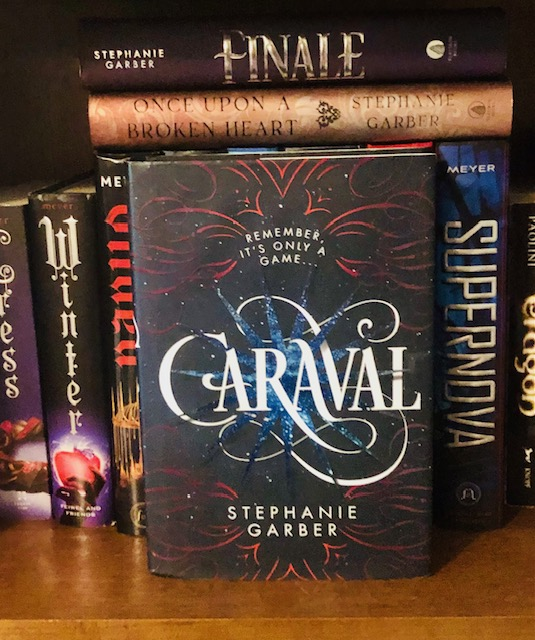

Caraval by Stephanie Garber
June 12, 2023 - June 13, 2023
Original Rating (2017): *5
 3.5
3.5
Audiobook
YA, Fantasy, Romance
Review
So this was one of my favorite books in high school, but I never
actually finished the series so I decided to re-read and get caught up on
this whole universe. I adored this book when I first read it. I still liked
it this time, but I found more to be annoyed with this time. Caraval as a
setting is atmospheric and magical. I’d love to be one of those less
serious participants and pop in for an adventure or just to sight see. I
also liked the tied color-emotion descriptions that Scarlett’s narration is
known for. I found Scarlett vaguely annoying at the beginning of the game
but I think part of it was knowing that a lot of her worries end up not
mattering. Plus the amount of characters in the book who berate her,
question her decisions, and call her naive or too trusting did not help my
opinion of her.
Spoilers
Given basically everyone and everything turned out to be a lie,
Speaking of that point, the twists were good, but overdone near the
end. There’s only so many times Julian can lie to Scarlett and get a
new backstory before it gets old.
Spoilers
He starts out as some sailor Tella uses to get off the island to Caraval, but he’s played before and sticks around to help Scarlett. Then she believes he’s Legend and involved with Rosa’s death. But wait he’s actually Rosa’s heartbroken brother working to get revenge on Legend. Except that’s also not true because he’s one of Legend’s players tasked with bringing her to Caraval and was everything they had a lie? Turns out he does like her and wants to try (now that he’s no longer dead) but by the way he’s Legend’s brother.
The ending plot twist with Tella was convoluted and I don't think the characters truly ackknowledge how messed up it was.
Spoilers
Tella’s whole plot with Legend at the end made for higher stakes and
drama but I don’t get how Scarlett isn’t more upset. That was
incredibly depressing and traumatizing for her only to find out half of
it was fake and the rest wasn’t permanent. I’m glad Tella wasn’t
actually that naive or condescending and that she and Julian are okay
but it was still convoluted and messed up.
Julian is on thin ice and I’d like to see some more development with Scarlett beyond attraction.
Scarlett’s exploration of Caraval was very entertaining, but the clues/scavenger hunt didn’t make a lot of sense. It all felt very arbitrary and hardly like she was progressing in any way.
Despite all that, I still enjoyed the book and had a fun time reading it. I’m looking forward to re-reading the next one.
Trigger Warnings
Mentions or depictions of:
death, blood, murder, child abuse, physical abuse, child abuse